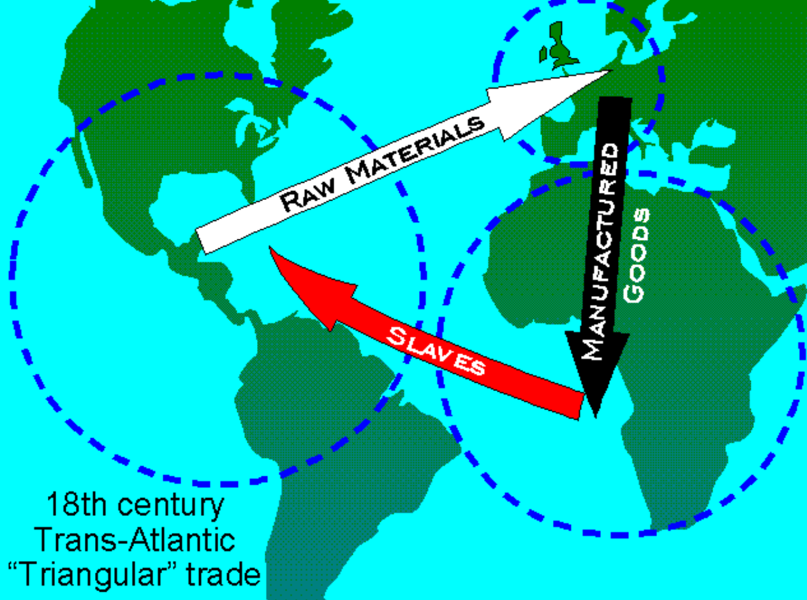
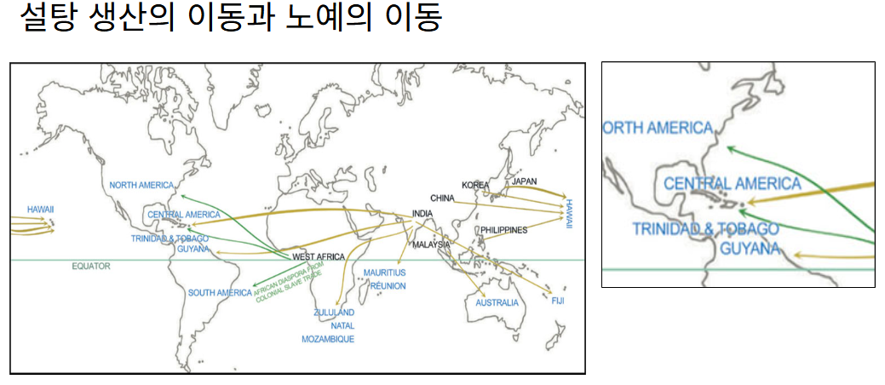

PART 1
무엇이 기록으로 남는가
지도는 무엇을 기록했는가 · Sweet and Speed
02 Sweet and Speed
설탕의 길, 사람의 강제이동
개념도 · 모든 항해가 같은 경로를 따른다는 뜻은 아님

대서양 교역 구조

설탕 생산과 강제이동
농장은 대서양의 교역과 연결되어 있었다
출처: International Slavery Museum · 교육자료 · 발표자 제공 Sweet and Speed